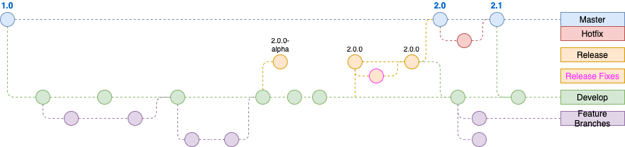

2. Developer GitHub Workflow¶
2.1. How it works¶

2.2. Develop and Main Branches¶
Instead of a single main branch, this workflow uses two branches to
record the history of the project. The main branch stores the official
release history, and the develop branch serves as an integration
branch for features. It’s also convenient to tag all commits in the
main branch with a version number.
The first step is to complement the default main with a develop
branch. A simple way to do this is for one developer to create an empty
develop branch locally and push it to the server:
git checkout master
git checkout -b develop
git push origin develop
This branch will contain the complete history of the project, whereas
main will contain an abridged version. Other developers should now
clone the central repository and create a tracking branch for develop.
When using the git-flow extension library, executing git flow init on
an existing repo will create the develop branch:
2.3. Feature Branches¶
Each new feature should reside in its own branch, which can be
pushed to the central repository for backup/collaboration.
But, instead of branching off of main, feature branches use develop
as their parent branch. When a feature is complete, it gets merged back into
develop. Features should never interact directly with main.
Note that feature branches combined with the develop branch is, for
all intents and purposes, the Feature Branch Workflow. But, the Gitflow
Workflow doesn’t stop there.
Feature branches are generally created off the latest develop
branch.
2.3.1. Creating a feature branch¶
git checkout develop
git pull origin develop
git checkout -b feature_branch
Continue your work and use Git like you normally would.
2.3.2. Finishing a feature branch¶
When you’re done with the development work on the feature, the next step
is to merge the feature_branch into develop.
Create a new pull request to merge to develop
2.4. Release Branches¶
Once develop has acquired enough features for a release for week 1 (or a
predetermined release date is approaching), you fork a releaseversion-alpha
branch off of develop for QA to test the features we develop during week 1.
After week 2, we will create a fork for the releaseversion branch off of develop. Creating this branch starts the next release cycle, so
no new features can be added after this point; only bug fixes,
documentation generation, and other release-oriented tasks should go in
this branch. Once it’s ready to ship, the releaseversion branch gets merged
into main and tagged with a version number. In addition, it should be
merged back into develop, which may have progressed since the release
was initiated.
Using a dedicated branch to prepare releases makes it possible for one team to polish the current release, while another team continues working on features for the next release if time permits. It also creates well-defined phases of development.
Making release branches is another straightforward branching
operation. Like feature branches, release branches are based on the
develop branch. A new release branch can be created using the
following methods.
After week 1: git checkout develop git checkout 1.1.0-alpha
After week 2: git checkout develop git checkout 1.1.0
Once the release is ready to ship, it will get merged into main and
develop, then the release branch will be deleted. It’s important to
merge back into develop because critical updates may have been added
to the release branch and they need to be accessible to new features.
This would be an ideal place for a pull request.
If new bug fixes need to go to the release branch after the QA team started testing, here is the way to release bug fixes to the release branch.
git checkout releaseversion
git merge hotfix_branch
git checkout develop git merge hotfix_branch
git branch -D hotfix_branch
2.5. Hotfix Branches¶
Maintenance or “hotfix” branches are used to quickly patch production
releases. Hotfix branches are a lot like release branches and
feature branches except they’re based on main instead of develop.
This is the only branch that should fork directly off of main. As soon
as the fix is complete, it should be merged into both main and
develop (or the current release branch), and main should be tagged
with an updated version number.
Having a dedicated line of development for bug fixes lets your team
address issues without interrupting the rest of the workflow or waiting
for the next release cycle. You can think of maintenance branches as ad
hoc release branches that work directly with main. A hotfix branch
can be created using the following methods:
git checkout main
git checkout -b hotfix_branch
Similar to finishing a release branch, a hotfix branch gets merged
into both main and develop.
git checkout main
git merge hotfix_branch
git checkout develop git merge hotfix_branch
git branch -D hotfix_branch
2.5.1. Example¶
A complete example demonstrating a Feature Branch Flow is as follows.
Assuming we have a repo setup with a main branch.
git checkout main
git checkout -b develop
git checkout -b feature_branch # work is done and commits are added to the feature_branch
git checkout develop
git merge feature_branch
git checkout main git merge develop
git branch -d feature_branch
In addition to the feature and release flow, a hotfix example is
as follows:
git checkout main
git checkout -b hotfix_branch # work is done and commits are added to the hotfix_branch
git checkout develop
git merge hotfix_branch
git checkout main
git merge hotfix_branch
2.6. Summary¶
Some key takeaways to know about Gitflow are:
The workflow is great for a release-based software workflow.
Gitflow offers a dedicated channel for hotfixes to production.\
The overall flow of Gitflow is:
A
developbranch is created frommainA
releasebranch is created fromdevelopFeaturebranches are created fromdevelopWhen a
featureis complete it is merged into thedevelopbranchWhen the
releasebranch is done it is merged intodevelopandmainIf an issue in
mainis detected ahotfixbranch is created frommainOnce the
hotfixis complete it is merged to bothdevelopandmain
2.7. Release Workflow¶
After week 1, the lead developer will create a releaseversion-alpha branch and trigger a new “Build and Deploy” job in jenkins and release versions to QA. QA will then trigger “Deploy” job in jenkins to QA.
It will give QA versions to deploy similar to those shown below.
FE Version: {version-alpha}-{buildnumber}
BE Version: {version-alpha}-{buildnumber}
After week 2, the lead developer will provide new build versions to deploy to QA.
Once the release is ready to ship, it will get merged into main and
develop, then the release branch will be deleted. It’s important to
merge back into develop because critical updates may have been added
to the release branch and they need to be accessible to new features.
Once the release is merged to the main branch, the new release tag is created from the main branch and release notes are added. The release notes should include the changes made and the docker build image number that was tested on QA.
Sample release notes
Features
- 1165 - Sorting and Ordering of Facet Option/Values - Tumor Size
- 1195 - Sorting and Ordering of Facet Option/Values - Recurrent Score
- 1208 - Custodian - Configure option to enable custom Regex on Facet Filter
- 1188 - PORT Tool-tips
- 1139 - Custodian: Make widget texts configurable
- 706 - Text cutoff(...) for widgets on the dashboard
- 919 - Default styling for new facet sections
Security Updates
Updated react-dev-utils from 7.0.5 to 11.0.4
Bug Fixes
- 1103 - On server paginated tables - Add/Remove columns do not persist , after we sort
- 1034 - On server paginated tables - Rows per page info is incorrect
QA verified tags
FE Version: 3.2.0-beta-599
BE Version: 4.0.0-599